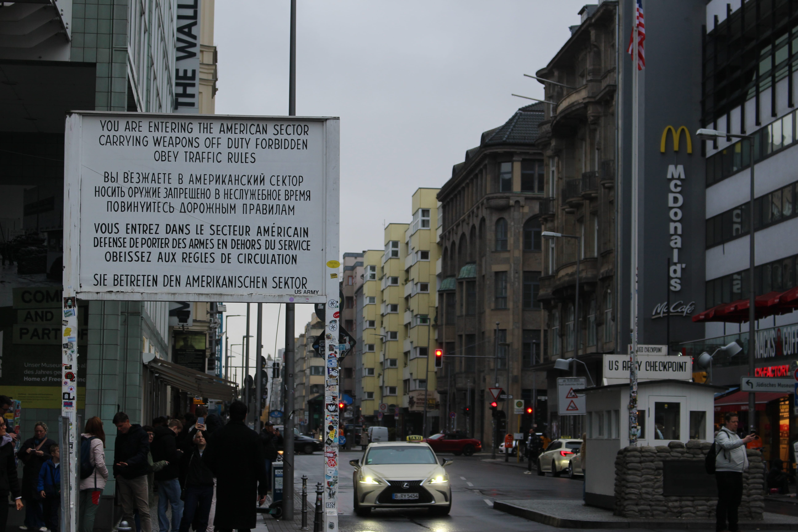
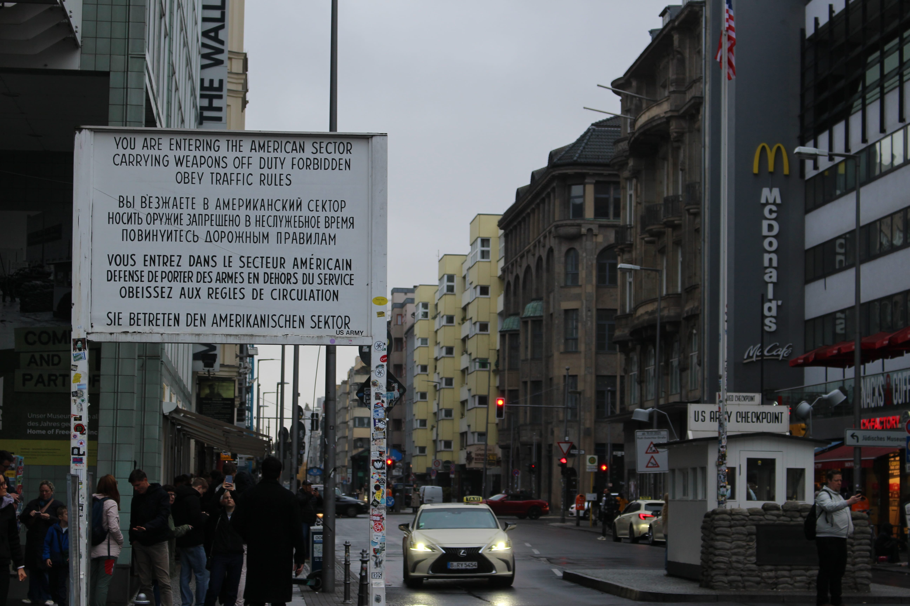
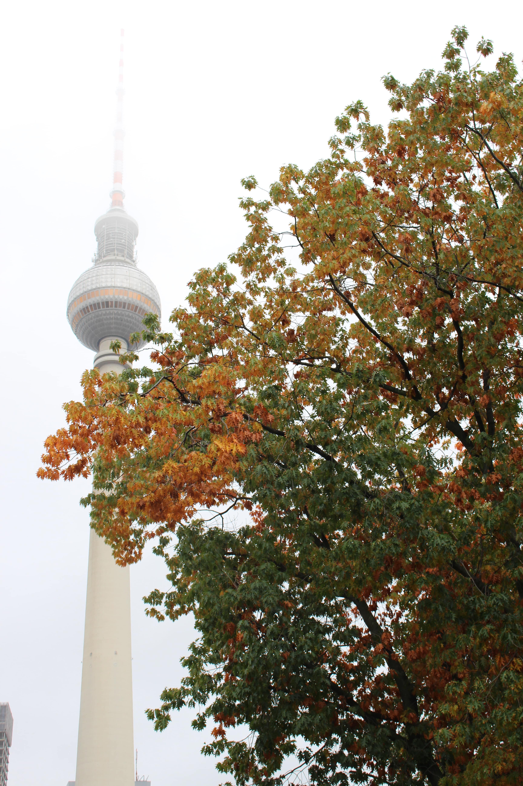
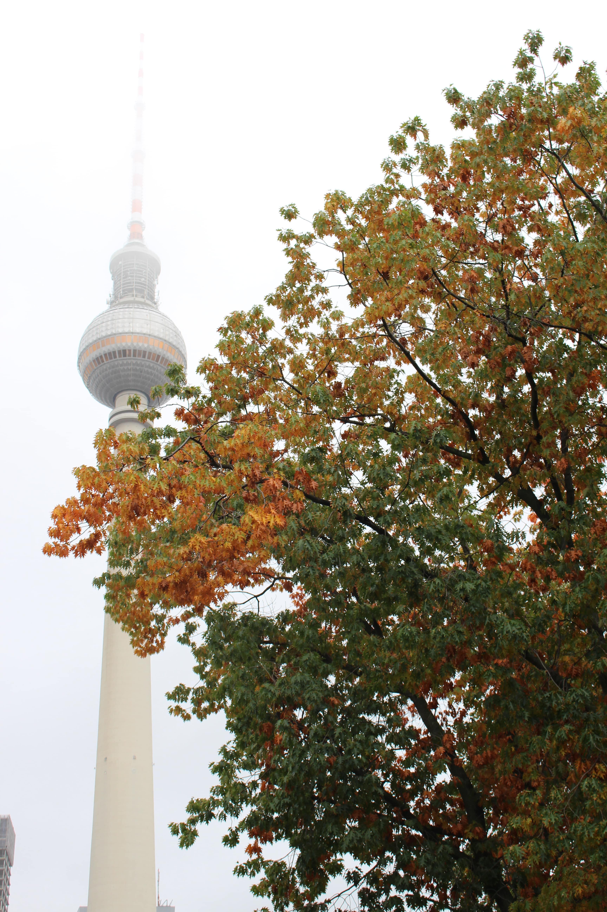
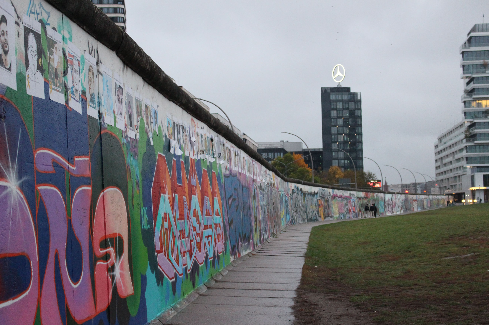
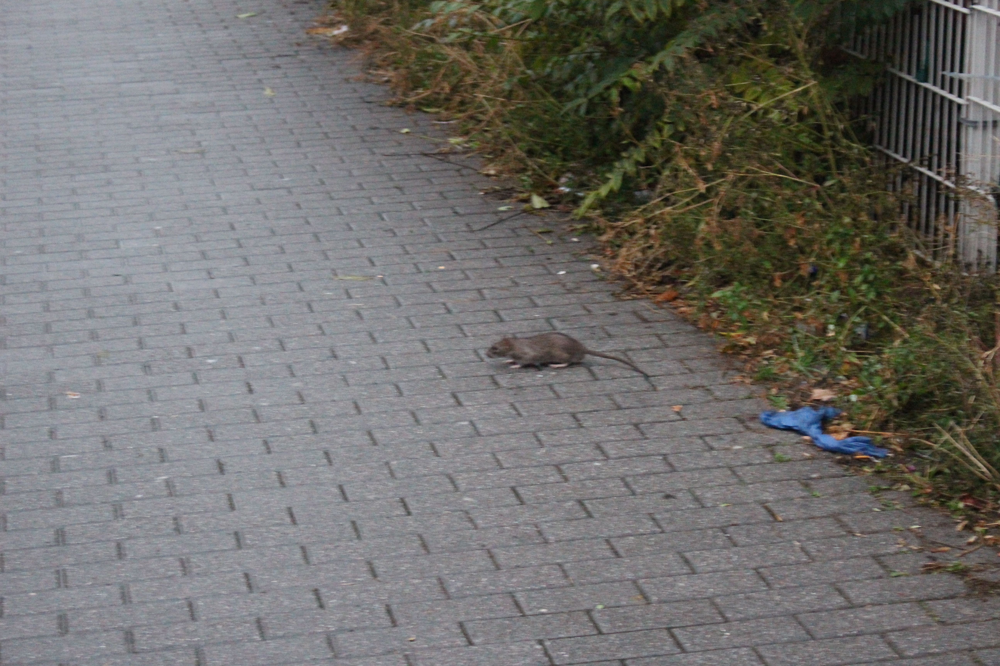
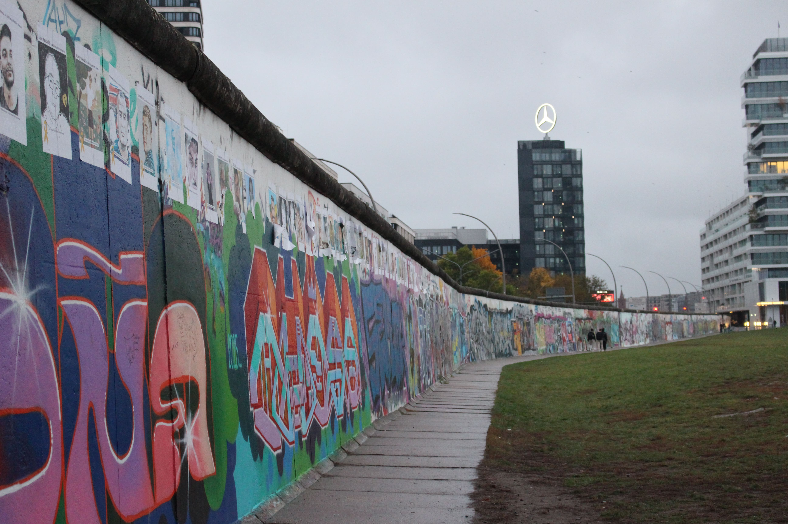
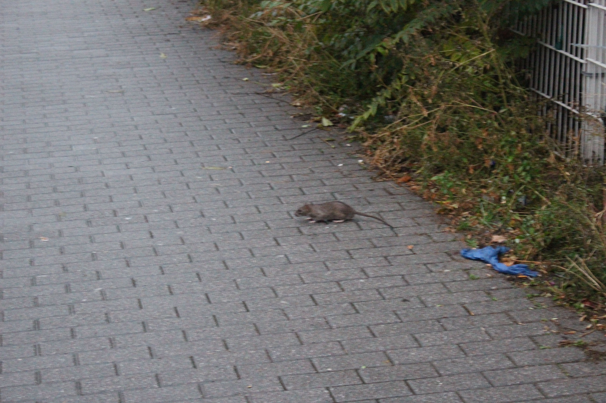

Journée à Berlin ! Ou plutôt après-midi. Je suis arrivée à 14 h, donc j’ai directement
cherché à me sustenter. Je suis allée à Teras (élu döner préféré des Berlinois en 2022),
où j’ai dégusté un excellent döner au halloumi. Je suis ensuite allée au Checkpoint Charlie,
le seul passage légal entre les deux Allemagnes à l’époque de la séparation. L’histoire du mur
y est racontée, c’est super intéressant !


 

Je suis ensuite allée dans le centre de Berlin, d’où on voyait notamment la Fernsehturm
(la tour de la télévision pour les non-germanophones), et pas mal de grands et beaux bâtiments.
Je suis tombée par hasard sur un marché d’art, avec beaucoup de choses sympas, mais aussi des posters
générés par IA, c’était bizarre.

 

Je suis rentrée dans l’ancienne église de Friedrichswerder, qui abrite maintenant une
exposition de sculptures en marbre. L’intérieur du bâtiment est très beau et agréable,
et tout semble aussi doux et lisse que le marbre des sculptures.
Je me suis désaltérée en goûtant l’Apfelschorle, du jus de pomme pétillant dont les Allemands
ont l'air très fiers (c’est du Champomy bio).


Le dernier endroit que je voulais voir, c’est l’East Side Gallery. C’est la plus longue
portion du mur encore debout (plus d’1 km), sur laquelle 200 artistes ont peint chacun sur
une portion. Le résultat est beau, et engagé.

 


